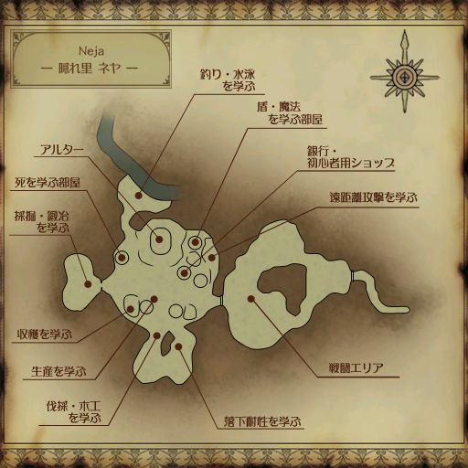

一覧釣りガイド：隠れ里 ネヤ（19000）
隠れ里 ネヤ の釣り場 2 か所（魚の出る位置 35）。
釣り場の地図

#1#2青い点が魚の出る位置、#番号が釣り場（3 匹以上）。点にマウスを合わせると魚の名前。
釣り場
地図の青い点が魚、赤がプレイヤーを襲うモンスターの出る位置。失敗マスはヒットゾーン 0・HP 満タンの魚のときのゲージに占める割合。
#1（魚 20 匹）
- 魚の数
- 20
- 広さ
- 0 m
- 再出現
- 10 秒
- 魚の Lv
- 0.1〜0.6
釣れる魚
| 魚（出るたびに抽選） | 数 | おもなドロップ（1 匹あたり） | 失敗マス（スキル 30 / 60 / 90） |
|---|---|---|---|
| レイク フィッシュ Lv 0.1〜0.6 | 20 | レイク フィッシュ < 24cm > 1 | 0% / 0% / 0% |
近くの敵
プレイヤーを襲うモンスターは届かない。
#2（魚 15 匹）
- 魚の数
- 15
- 広さ
- 26 m
- 再出現
- 10 秒
- 魚の Lv
- 0.1〜0.6
釣れる魚
| 魚（出るたびに抽選） | 数 | おもなドロップ（1 匹あたり） | 失敗マス（スキル 30 / 60 / 90） |
|---|---|---|---|
| レイク フィッシュ Lv 0.1〜0.6 | 15 | レイク フィッシュ < 24cm > 1 | 0% / 0% / 0% |
近くの敵
プレイヤーを襲うモンスターは届かない。